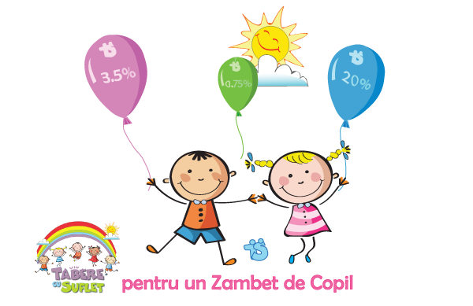

Mulțumim tuturor celor care de ani buni ne ajuta sa oferim Zambete Copiilor! 
Anual, sute de copii beneficiaza de aceste Zambete si nu numai, prin Programele WeCare avand acces la Tabere gratuite, Competitii, Jucarii si alte beneficii.
"A darui este o experienta care iti va transforma viata,
chiar daca incepi prin a darui, cu generozitate, un simplu Zambet!"
Sunt mai multe moduri prin care ne puteti ajuta. Daca sunteti persoana fizica si doriti sa ne sustineti, o puteti face prin redirectionarea unui procent din impozitul pe venit sau, in mod direct, prin donatii. De asemenea, indeplinim toate conditiile impuse de lege pentru a primi sponsorizari de la firme.
Daca sunteti persoana fizica si aveti venituri din salarii si pensii sau alte activitati, puteti sa sustineti Asociatia tabere cu Suflet prin redirectionarea unui procent din impozitul pe venit. Nu costa nimic si necesita doar simpla trimitere a unui formular.
# Pasul ➀: Descarcarea Formularului
Alegeti formularul corespunzator veniturilor dvs:- Daca aveti venituri din SALARII sau PENSII: Declaratia 230 (447 kB)
- Daca ati realizat și alte venituri (SALARII si ACTIVITATI INDEPENDENTE, sau numai ACTIVITATI INDEPENDENTE): Declaratia unica (160 kB)
# Pasul ➁: Completarea Formularului
- Secțiunile pe care este nevoie să le completati sunt: Nume, Prenume si Cod de identificare fiscala (CNP).
- Suma nu trebuie completată, inspectorul fiscal va face acest lucru.
- Formularul este precompletat cu datele Asociatiei Tabere cu Suflet (Denumire, Cod si Cont bancar) si cu optiunea de directionare a 3,5% pe 2 ani.
- În cazul în care, totusi, datele Asociatiei nu sunt trecute in formular, le puteti gasi aici
# Pasul ➂: Trimiterea Formularuluii
- Formularul se printeaza si se trimite la Administrația Financiară de care aparțineti, personal sau prin poștă, cu scrisoare recomandată cu confirmare de primire. Administrația Financiară de care apartineti este cea din localitatea de domiciliu (domiciliul din cartea de identitate / buletin). Adresele Administrațiilor Financiare se gasesc aici.
- Termenul limită de depunere este 25 mai a.c. pentru anul trecut. Pentru a nu risca sa fie refuzate de catre ANAF, va rugam sa le trimiteti cat mai din timp. Va multumim!
Alte variante de completare
- O alta varianta este sa completati si sa depuneti formularul online, folosind serviciul ANAF "SPV" - Spațiul Privat Virtual. Datele Asociatiei se gasesc aici
- De asemenea, puteti da formularele Cameliei sau lui Radu, impreuna cu o copie dupa Cartea de Identitate, cu mentiunea "Conform cu originalul", urmand sa le depuna ei la Administratia Finantelor Publice in numele Dvs.
De ce sa redirectionez 3,5% din Impozit
- Sistemul 3,5%, prevăzut de Legea 571/2003 privind Codul Fiscal, permite contribuabililor persoane fizice să direcţioneze o parte din impozitul pe venit către o entitate non-profit (ONG). Este un sistem prin care cetăţenii au posibilitatea de a decide în mod direct ce se întâmplă cu o parte a impozitului datorat statului.
- Dacă nu redirecţionaţi aceşti 3,5% către un ONG, suma respectiva este administrata de Stat! De obicei ramane la buget, sau este redristibuita catre asa-zisele "GONGO" (ONG-uri nascute din interesul autoritatilor, in care fondatori / membri sunt, direct sau prin interpusi, exclusiv sau predominant autoritati sau institutii publice, si care au ca scop directionarea sumelor din 3,5% tot catre autoritati).
- In cazul persoanelor care au realizat venituri din activitati independente, nu numai din salarii, acestea au oricum obligatia sa depuna Declaratia Unica, chiar daca nu doresc redirectionarea a 3,5 % din impozit.
- Direcţionarea nu presupune costuri sau eforturi suplimentare, în afară de completarea datelor Dvs în declaraţiile de venit.
- Direcţionarea celor 3,5% este anonimă, ceea ce înseamnă că trezoreria nu are dreptul de a face public numele contribuabilului (se presupune ca se pot face calcule inverse, pentru a afla salariul persoanei respective).
- Nu in ultimul rand, "O fapta buna aduce Pace si Energie" :)
- Mai nou, conform OG 18/2018, art 79, puteti opta pentru a direcționa lunar 3,5% din impozitul pe venitul din salarii, in baza unei cereri adresate departamentului Economic / Resurse Umane al companiei la care sunteti angajat. Gasiti modelul de cerere precompletat aici (link, 25 kB).
- In afara de directionarea unei fractii din impozitul pe venit, aveti posibilitatea de a face donatii directe in Contul Asociatiei sau in contul de PayPal. Va multumim!
Asociatia Tabere cu Suflet este înregistrată în Registrul entităților / unităților de cult pentru care se acordă reduceri fiscale. Cu alte cuvinte, beneficiati de facilitati fiscale atunci cand sponsorizati Asociatia noastra. Pentru aceasta este necesara incheierea unui contract de sponsorizare. Conform codului fiscal, sponsorizarea poate fi facuta atat de o microintreprindere, cat si de o societate comercială care plătește impozit.
- Conditii:
Aveti o firma? Acum puteti direcționa 20% din impozit prin sponsorizare către Asociația Tabere cu Suflet fara sa va coste nimic. Sponsorizarea se va transforma în sprijin direct pentru Copiii din programul WeCare Mai multe detalii
Conform Legii nr. 32/1994, cu modificările și completările ulterioare, puteți sponsoriza Asociatia Tabere cu Suflet atât în situația în care reprezentați o societate comercială care plătește impozit pe profit, cât și în situația în care reprezentați o microîntreprindere. Sponsorizarea poate fi facuta în baza unui contract de sponsorizare, până la data de 31 decembrie sau retroactiv. - Societati comerciale:
Dacă sunteți societate comercială care plătește impozit pe profit, sumele aferente sponsorizărilor se scad din impozitul pe profit datorat la nivelul valorii minime dintre următoarele: 0,75% din cifra de afaceri, respectiv 20% din impozitul pe profit datorat. Deducerea fiscala se face prin completarea formularului 107 (Descarca formular 107) și depunerea acesteia până la data de 25 ianuarie pentru toate sponsorizările efectuate în anul precedent pentru plătitorii de impozit pe venit și până la 25 martie pentru plătitorii de impozit pe profit. - Microintreprinderi:
Dacă sunteți microîntreprindere, puteți sponsoriza Asociatia Tabere cu Suflet conform legii. Sumele aferente sponsorizărilor se scad din impozitul pe venit datorat trimestrului anterior, până la nivelul valorii reprezentând 20% din impozitul pe venit datorat pentru acest trimestru. Deducerea fiscala se face prin completarea formularului 107 (Descarca formular 107) și depunerea acesteia până la data de 25 ianuarie pentru toate sponsorizările efectuate în anul precedent. - Sponsorizari retroactive:
In cazul in care nu ati reușit să oferiti sprijin prin sponsorizare din cuantumul de 20% din impozit pe anul precedent, acum aveti posibilitatea de a redirecționa retroactiv sumele rămase prin completarea online a formularului 177 (Descarca formular 177). Formularul poate fi depus în termen de 6 luni de la data depunerii declarației de impozit anuale, sau declarației aferente trimestrului IV a anului anterior, sau 6 luni de la termenul legal de depunere a declaraţiei anuale de impozit pe profit. Mai multe detalii
Va multumim si va rugam sa ne aveți în vedere și în trimestrele următoare!
In afara de sponsorizare sau redirectionarea unui procent din impozitul pe venit, exista si alte metode directe de sustinere.
Prin donatii directe in Contul Asociatiei
Vezi lista donori |
Prin donatii in contul de Pay Pal |
Printr-un simplu share
|
|
|
||
|
Va multumim pentru Zambetele oferite Copiilor:) |
||
Incepand din anul 2010, prin proiectele WeCare Asociatia Tabere cu Suflet ajuta anual sute de copii, oferind Tabere gratuite, Competitii, Jucarii si alte beneficii. Sunt peste 20 de astfel de proiecte in derulare, prin care sunt ajutati copii cu situatii speciale si nu numai. Prin programele WeCare ne propunem sa promovam o Lume mai Buna, oferind sprijin celor ce au nevoie de ajutor si inspirand si pe altii prin exemplul personal.